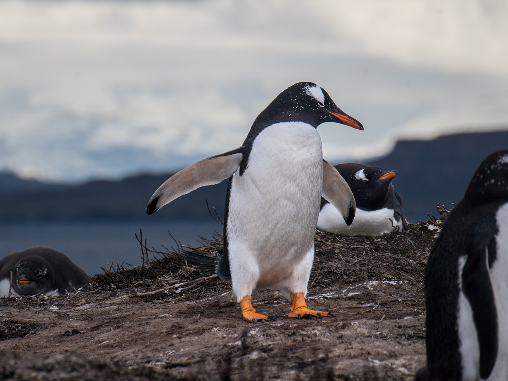
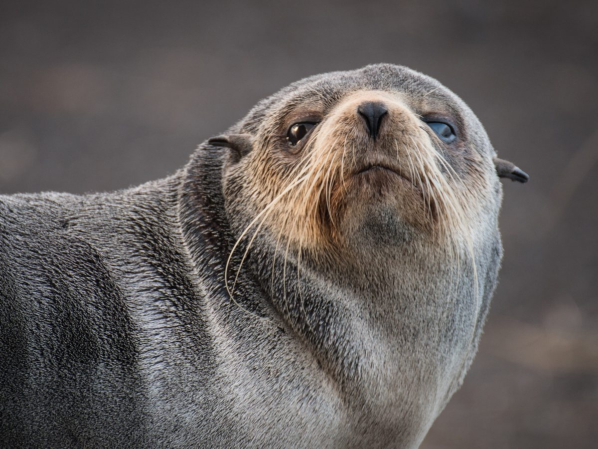

Pingüino rey
Aptenodytes patagonicus
La especie emblemática de la isla. Alberga enormes colonias de reproducción. Seis de los ocho pingüinos que puedes apadrinar son reyes.
Isla Alfred Faure, archipiélago de Crozet
La mayor del archipiélago, a unos 3.100 km de Ciudad del Cabo y a 2.400 km de la Antártida. Llueve más de 300 días al año y el viento no para nunca.

La isla es de origen puramente volcánico. El interior lo dominan crestas basálticas escarpadas, valles glaciares y mesetas rocosas expuestas, que culminan en el Pic du Mascarin, a 934 metros.
Buena parte de la costa son acantilados inaccesibles batidos por el oleaje, interrumpidos por bahías resguardadas y playas de cantos rodados y arena volcánica negra.
En las zonas bajas el suelo es tundra subantártica: una capa fina de musgos y turberas saturada de agua, blanda y fangosa, sin capacidad de soporte para cimentaciones pesadas. Cualquier construcción tiene que resolver ese problema sin verter hormigón.
No hay un solo árbol. Crece la col de Kerguelen (Pringlea antiscorbutica), una crucífera endémica de las islas subantárticas, célebre por su alto contenido en vitamina C.

La temperatura media anual ronda los 3,5 a 4 °C y apenas varía: en verano austral las máximas rara vez pasan de 8 a 10 °C, y en invierno las medias se mueven entre 0 y 3 °C.
El viento lo condiciona todo. La isla está plenamente dentro de la franja de los Cuarenta Bramadores.
La isla es un santuario de biodiversidad marina de importancia global en el océano Índico sur. Alberga muchas especies y, entre ellas, cinco especies crían en ella.
Aptenodytes patagonicus
La especie emblemática de la isla. Alberga enormes colonias de reproducción. Seis de los ocho pingüinos que puedes apadrinar son reyes.

Pygoscelis papua
Coloniza en grupos más pequeños el borde de las praderas de tundra, cerca de las playas. Dos de los ocho pingüinos apadrinables son papúas.

Diomedea exulans
Nidifica en las mesetas altas. Sus rutas de vuelo condicionan la altura y la ubicación de los aerogeneradores de la Zona 3.

Mirounga leonina
Ocupa masivamente las playas de cantos rodados durante sus periodos de reproducción y muda.

Arctocephalus tropicalis
Frecuenta las zonas costeras rocosas de toda la periferia de la isla.
Toda la franja costera y las playas de cría serán áreas de impacto cero. Se prohibirá cualquier infraestructura industrial permanente y se mantendrá un perímetro de exclusión de 2 km alrededor de las colonias de pingüino rey y elefante marino, para no alterar su ciclo biológico. Solo se admitirá un corredor logístico estrecho en la costa norte, fuera de la Baie du Marin.